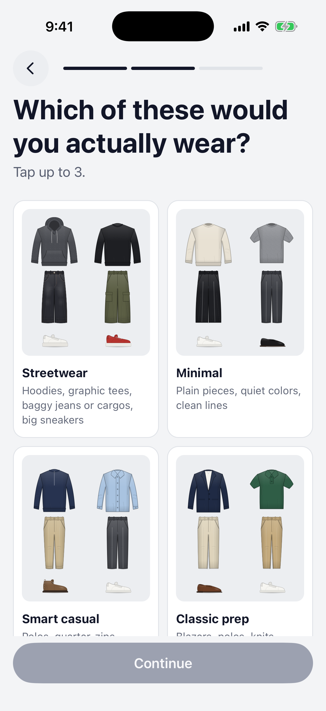
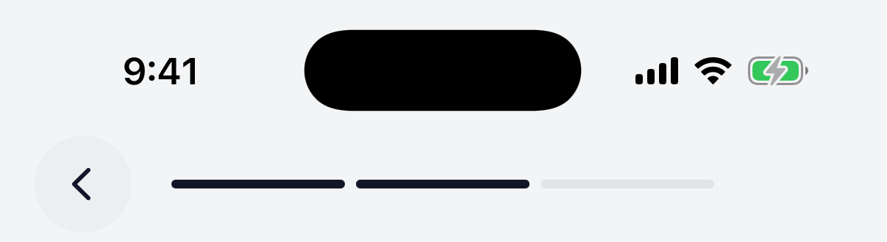
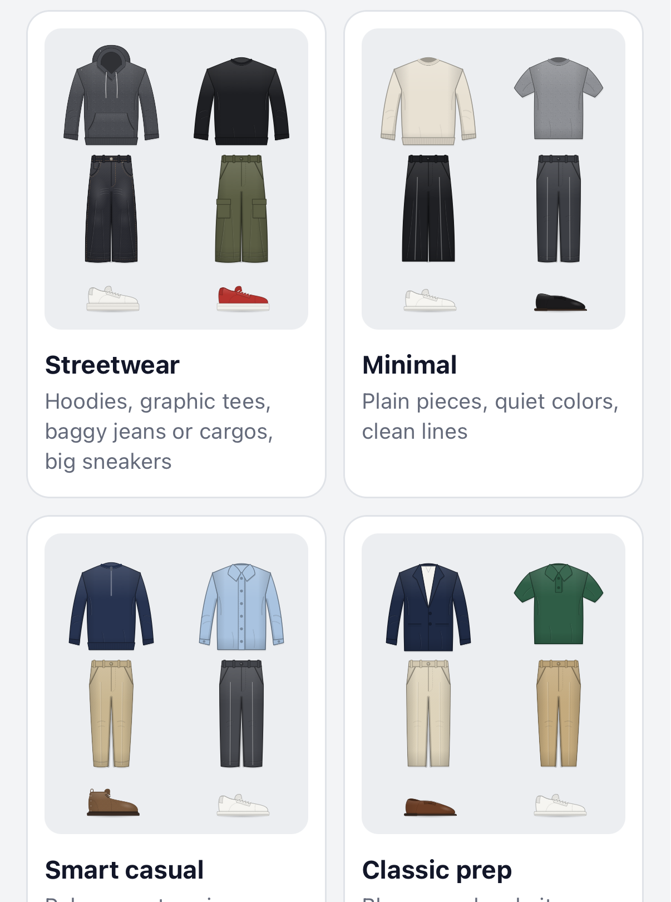
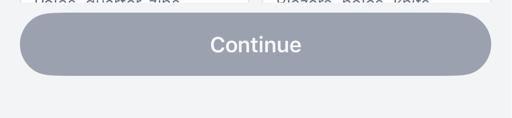

A tester read "Which of these would you actually wear?" as "what are you wearing right now". These mockups use the real screen (tiles, progress bar, Continue) from the Simulator; only the title and the line under it change. Nothing is built yet.
Same in all three: the tiles, up to 3 picks, Something else, Not sure, Continue · n of 3. A one-line title also lifts the tiles about 40 pt, so more of the second row shows.

Which of these would you actually wear?
Tap up to 3.
"Wear" can mean right now, and the next thing the app asks for is a photo of today's outfit.

Tap up to 3. Your taste, not today's outfit.


Which styles are you into?
Tap up to 3. Your taste, not today's outfit.
Rules out the misread in the line itself. The title still runs two lines.
Pick up to 3 looks you like. Today's outfit comes next.
What's your style?
Pick up to 3 looks you like. Today's outfit comes next.
The shortest title: it reads as taste at a glance, and the line tells him where today's outfit fits (the next step), so he isn't wondering. One line of title shows more tiles.
Up to 3 looks you'd go for. Not what you have on now.
Pick your styles
Up to 3 looks you'd go for. Not what you have on now.
An instruction instead of a question. Clear, but a bit flat, and "not what you have on now" names the misread, which can plant it.